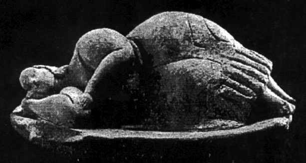

Sculpted from limestone, lying at the centre of the Ħal Saflieni Hypogeum, a goddess breathes. One with the stones, she echoes while the stones echo her back, containing her at the same time. She used to be a symbol of fertility and death, of rebirth. Now, through the undulating frequencies of the soundscape, Abigail Toll channels her once more, asking: How has the goddess survived? Perhaps just as a sound survives — through what and who it touches across different times.
Through this manifestation of Toll's research, she invites us to feel and imagine what remains of ritual in connection with the Neolithic Great Mother archetype within Malta’s burial site and temple. The disappearance of rituals is connected to the lack of contemporary symbols reminding us of our connection with the cosmos and the earth. As Byung-Chul Han says, “symbolic perception, as recognition, is a perception of the permanent.” The installation arrives at a critical moment, as our world becomes increasingly devoid of symbols and their rites.
